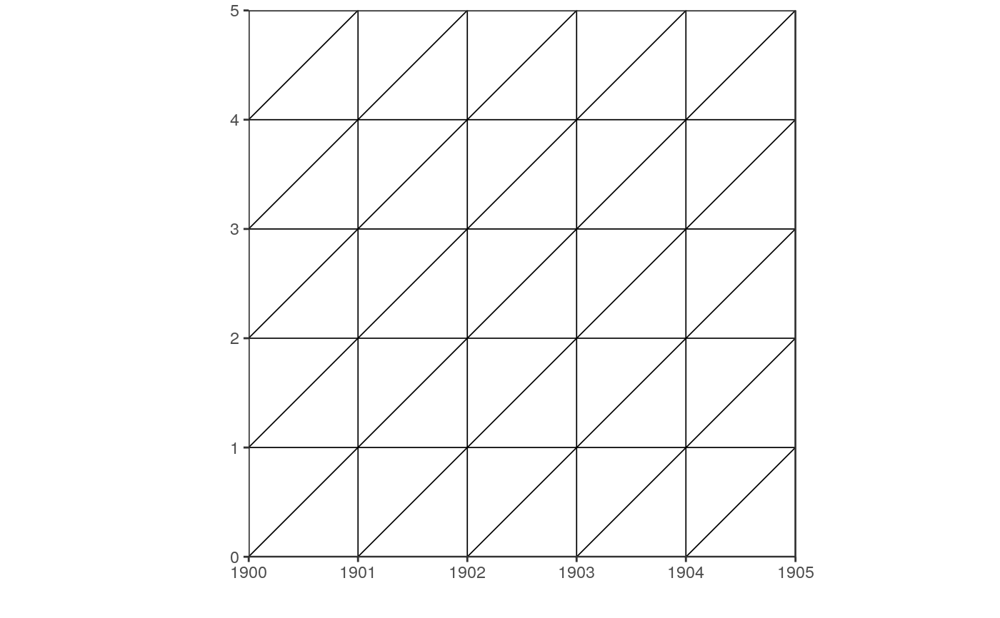

lexis_grid() plots the basic Lexis grid.
lexis_grid(year_start, year_end, age_start, age_end, delta = 1, lwd = 0.3, force_equal = TRUE)
| year_start | integer, set the year the Lexis Diagram starts with. |
|---|---|
| year_end | integer, set the year the Lexis Diagram ends with. |
| age_start | integer, set the age the Lexis Diagram starts with. |
| age_end | integer, set the age the Lexis Diagram ends with. |
| delta | numeric, set the size of the age groups. Default is 1. |
| lwd | numeric, set the linewidth of the grid. |
| force_equal | logical, by default |
A ggplot object.
The function determines the aspect ratio of the x- and y-axis to enforce
isosceles triangles. The aspect ratio will not be effected by defining
width and height in pdf() or other graphic devices.
Because the returned object is a ggplot2 graph, the overall appearence of
the graph can be edited by adding themes() to the plot.
